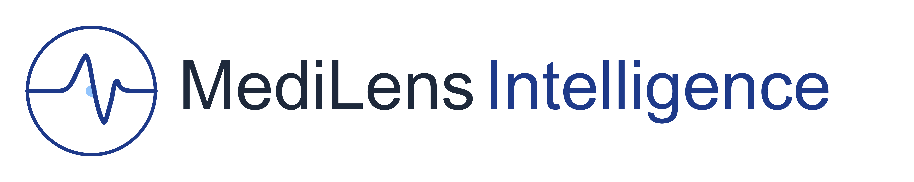
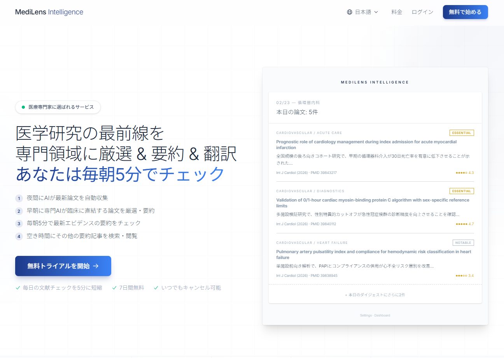

About
医療系ITの現場で20年以上にわたりシステムエンジニアとして働き、医療情報システムの設計・開発・運用を担ってきました。その経験を活かし、医師が本当に必要としている情報を毎朝届けるSaaSを、AIとの協業だけで実現しました。
Claude Codeとの対話を通じて、企画・設計・コーディング・テスト・デプロイまでを一人でこなし、30日でサービスをリリース。その開発記録を書籍としてまとめ、日英両語で出版しました。
現在は MediLens Intelligence に加え、Claude News JP / AI News JP / BUZZ Media News の 3 つの非公式ニュースサイトを並行運営。AI とサーバーレスを駆使し、毎月新しいシステムやサイトをリリースし続けています。
Service

PubMedから最新論文を自動取得・要約・翻訳し、専門領域に合わせて毎朝医師へ配信します。

News
AI を活用して各社公式情報を毎日自動収集・要約・分類して配信する非公式ニュースサイトを 2 つ運営しています。要約は Claude Haiku 4.5、サーバーレス（AWS Lambda + DynamoDB + S3）で完全自動運用。
www.claude-news.online
Anthropic / Claude / Claude Code の最新ニュース・リリース・更新情報を毎日日本語で要約配信する非公式ニュースサイト。
www.ai-news.jp
Anthropic / OpenAI / DeepSeek 各社の最新ニュース・リリース情報を毎日日本語で要約配信する非公式 AI ニュースサイト。
www.buzzmedia-news.com
SNS (X / LINE / TikTok / YouTube)・SEO・MEO・Google Ads など Web マーケティング各プラットフォームの仕様変更・告知・アルゴリズム更新を毎日日本語で要約配信する非公式ニュースサイト。